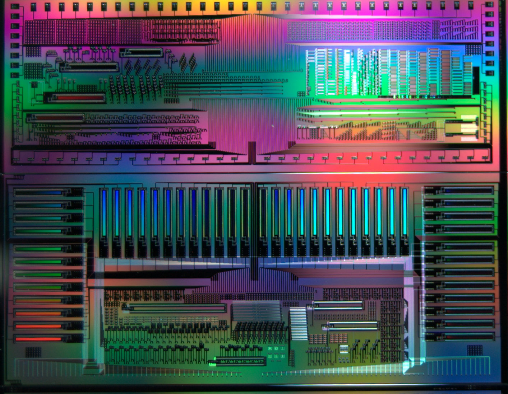
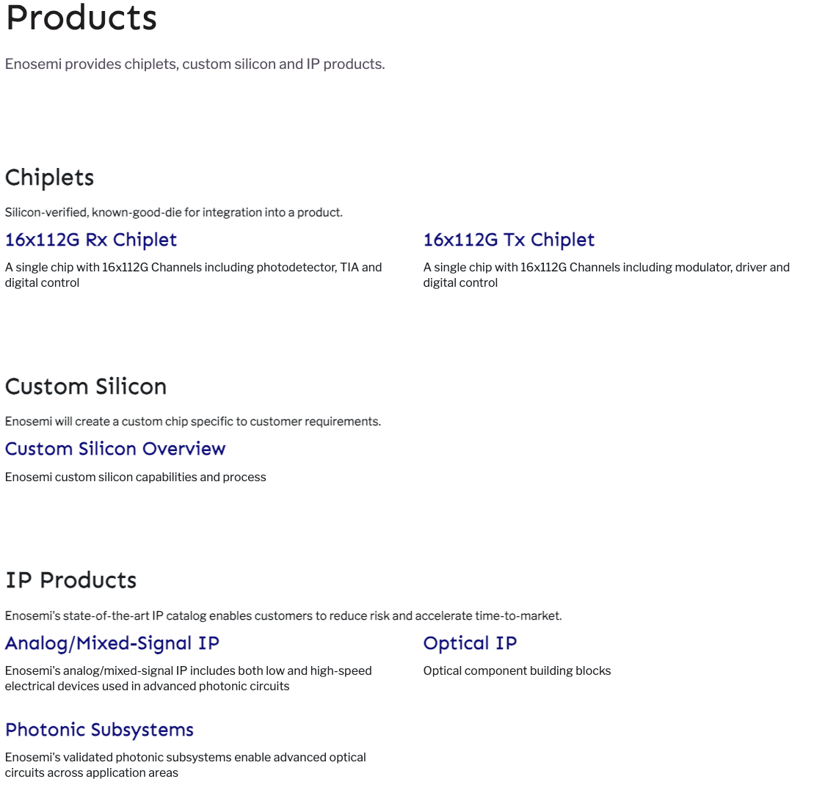
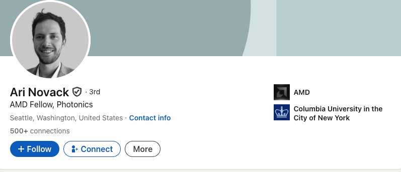

AMD 收购硅光子初创公司

AMD 已收购 Enosemi，这是一家设计定制材料以支持硅光子产品开发的初创公司。该交易于周三宣布，具体条款未披露。 公司官网上的介绍
Enosemi’s core design IP accelerates time-to-market, reduces risk, and lowers cost for our partners across markets including communications, computing, consumer, and med-tech. The Enosemi team has industry-leading product experience coming from shipping real products to market in volume.
硅光子技术利用光（光子）传输数据，提供了一种比传统电通信更快、更高效的替代方案。AMD 及其他芯片制造商对此技术的兴趣日益浓厚。据报道，去年年底，AMD 与几家台湾初创公司合作进行硅光子研发。
AMD 表示[https://www.amd.com/en/blogs/2025/amd-acquires-enosemi-to-accelerate-co-packaged-optics-innovation.html]，对 Enosemi 的收购将“加速其针对人工智能系统的共封装光学创新”。
AMD 技术与工程高级副总裁 Brian Amick 在一篇博客文章中写道：“随着人工智能模型变得越来越大、越来越复杂，对更快、更高效数据传输的需求正在加速。” “Enosemi 作为我们的外部开发合作伙伴，在光子学领域与我们进行了合作，此次收购扩展了这一成功的合作关系。现在，作为 AMD 的一部分，该团队将帮助我们立即扩展能力，以支持和开发各种面向下一代人工智能系统的光子学和共封装光学解决方案。”
Enosemi 总部位于硅谷，致力于构建和交付光子集成电路——这种微芯片包含两个或多个形成功能电路的光子组件。Enosemi 由一群科技企业家于 2023 年创立，其中包括 Ari Novack 和 Matthew Streshinsky（两人均具有半导体工程背景），其产品包括光互连等，可将计算和网络组件集成到数据中心内部。 
在被收购之前，Enosemi 从包括新墨西哥复古基金 (New Mexico Vintage Fund) 在内的支持者那里获得了 15 万美元的风险投资。根据 PitchBook 的数据，截至 5 月，该公司拥有 16 名员工。
Novack 的 LinkedIn 个人资料现在显示他是 AMD 的硅设计工程研究员。
